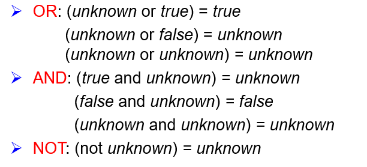

SQL¶
约 2707 个字 157 行代码 预计阅读时间 15 分钟
一定要记住查询语句的执行顺序，才能理清逻辑
Overview¶
SQL(Sequel)是一个语言规范，最初由 IBM 设计。不过很多 DBMS 并不会完全按照规范设计它们的语言，每个人都想要将它们的 feature 加入 SQL 后续的更新中。
我不想我的 SQL 语句能被别的厂商直接使用（）
按照标准符合度(Conformance Levels)，可以分为四类：
- Entry Level SQL 入门级
- Transitional SQL 过渡级
- Intermediate SQL 中间级
- Full SQL 完全级
到了现在，已经没有 DBMS 产品会实现 FULL LEVEL 的标准符合度了。
作为一个关系型语言，SQL 主要由以下三个方面组合而成：
- Data Manipulation Language (DML)
- 数据操作语言，即检索数据或修改数据的命令
select ... from ...insert,delete,update
- Data Defination Language (DDL)
- 数据定义语言，可涉及到索引、命名空间、触发器、函数等，通常为数据库声明元数据
create table,alter table,drop tablecreate index,drop indexcreate view,drop viewcreate trigger,drop trigger
- Data Control Language (DCL)
- 数据控制语言，关于安全和类似内容的规范
grant,revoke
{kind=link}
Data Definition Language¶
一个典型的 DDL 语句如下：
SQL 的 Domain Type 大体有以下几类：
char(n): 用户指定的定长字符串- C语言中字符串一定以 0 结尾，但是 DB 中并不需要
varchar(n): 用户指定最大长度的可变长度字符串int: 整数，根据机器的不同指定的范围不同smallint: 整数，比int范围更小numeric(p,d): Fixed Point Number，p 表示有效数字位数，d 表示小数点后多少位- 例如，
numeric(3,1)允许 44.5，但不允许 444.5 或者 0.32
- 例如，
real, double: 浮点数，根据机器的不同精度不同float(n): 浮点数，由用户指定最小精度null values: 空date: 包含年(4 digit)、月、日- E.g.
2007-2-27
- E.g.
time: Time of day, in hours, minutes, and seconds- E.g.
11:18:16or11:18:16.28
- E.g.
timestamp: 时间戳，通常是 Data + Time- E.g.
2007-2-27 11:18:16.28
- E.g.
- Large Object Types，用来存储大文件，如
blob(20MB)blob: Binary Large Objectclob: Character Large Object
SQL 有许多函数用来处理各种类型的数据及其类型转换，但各数据库系统中函数的标准化程度不高
除了在 CREATE 语句中指定 Domain Type 外，还需要加入必要的 Integrity Constraints 来确保数据库的完整性：
not null: 要求非空default: 设定缺省值check(p): 检测谓词 p 是否成立Primary Key(A1, A2,...): 括号内不能为空、不能有重复 KeysForeign Key(A1, A2,...) references r: 引用对应表的主键
Referential Integrity 的检测只在一个事务结束时进行，因此事务中间可以暂时违反
SQL 还支持用户自定义 Types 或 Domain：
区别在于，DOMAIN 允许添加约束
不要轻易使用 DROP 指令，DELETE 起码还会把 SCHEMA 留下来，DROP 了什么都没了
在不读取整个表的情况下，索引使得数据库应用程序可以更快查找数据，并且是用户不可见的。
由于索引本身也需要更新，更新一个带索引的表要比没有索引的同一表消耗更多时间，因此，理想的做法是只在常常被搜索的 Column 上建立索引。
To Drop an index
Basic Structure¶
等价于逻辑代数：
SQL 允许 Relation 中出现重复元组，使用 distinct 关键字来强制筛选
在 SQL Server 中，可以使用等于号来代替上式的 as
SQL 还提供 String-Matching Operator，通常在 where 语句中使用 LIKE 运算符：
%: 匹配任意字串_: 匹配任意单字符
Set Operations¶
在 SQL 中，集合操作有 UNION, INTERSECT, EXCEPT，分别对应着并集 \(\cup\)，交集 \(\cap\)，以及差集 \(-\)。与其他操作不同的是，set operations 会自动隐去重复的元素，如果我们想保留重复元组，则需使用 UNION ALL 等关键字。
Suppose a tuple occurs m times in r and n times in s, then it occurs:
- \(m+n\) times in
r UNION ALL s - \(\min (m,n)\) times in
r INTERSECT ALL s - \(\max (0, m-n)\) times in
r EXCEPT ALL s
Example. Find all customers who have an account but no loan.
注意不同 DBMS 之间差别，例如 Oracle 使用 MINUS 代替 EXCEPT，SQL Server 2000 只支持 UNION 和 UNION ALL 等
Aggregate Functions¶
带聚合函数的 SELECT 之后只能跟着 GROUP BY 子句中的属性或者聚合函数
Example. Find the average account balance for each branch
由于 WHERE 的计算顺序比聚合函数前，所有当执行 WHERE 判断时聚合函数还没有得到结果，因此我们不能在 WHERE 中加入聚合函数。相对的，我们使用 HAVING 关键字来作为代替：
Example. Find the names of all branches located in city Brooklyn where the average account balance is more than $1,200
除了 COUNT(*) 的聚合函数默认忽略 Null Values，除非该值全部为 null，此时也会返回 null。
Null Values
任意带 null 的算术计算结果都是 null，任意带 null 的逻辑比较结果都是 unknown。此外，三种带 unknown 的逻辑计算结果为： 
{kind=link}
同时，作为 WHERE 子句中的谓词，需要使用 WHERE amount is not null 的形式来判断 null values，而不能直接用等于号。WHERE 最终结果如果为 unknown，也当作 false 处理。
关键字 rollup
group by rollup(A,B,C) 能够自动生成多级别的汇总数据：
- 按 (A, B, C) 分组，计算最详细的分组统计。
- 按 (A, B) 分组，忽略 C，计算 B 级别的汇总。
- 按 (A) 分组，忽略 B 和 C，计算 A 级别的汇总。
- 整体汇总，不按任何列分组，计算全局统计。
{kind=link}
{kind=link}
Nested Query¶
我们知道 FROM 甚至 WHERE 子句中都可以以一张表作为对象，而我们 SELECT 语句得到的结果就是一张表，因此我们完全可以进行嵌套查询，下面是一个简单例子：
那么，如果我们想查找各个 branch 中 balance 最大的账户，该如何构造嵌套查询？
分析语序，此处相当于一个两层嵌套循环，先从外层 A 取出一个 branch_name，然后找出内层所有相同 branch_name 的元组，计算最大值，再回到外层进行比较。这样唯一符合的结果就是该 branch_name 中 balance 最大的账户了。
除此之外，SQL 还有一种 set comparison，分别是 SOME 和 ALL 关键词：
{kind=link}
{kind=link}
VIEW¶
VIEW 并不占用实际空间，是一张更方便查看的逻辑表，同时也可以被当作正常表来访问（以及嵌套查询）。
下面的 SQL Server 语句创建了一个用于统计各个用户的贴数的 VIEW：
使用 DROP VIEW <V_NAME> 来删除 VIEW
我们甚至可以对 VIEW 进行 Modification，DBMS 会尽可能将其“翻译”为对基表的操作。但我们尽量不要这么做。只有行列视图可以更新数据。
行列视图
建立在单个基本表上的视图，且视图的列对应表的列，称为行列视图。
通过 WITH 关键字，我们可以建立一个 LOCAL VIEW，使得嵌套查询变得更加美观：
Modification¶
Modification 即我们熟识的增删改 INSERT, DELETE, UPDATE:
使用聚合函数和 CASE 实现行列互换
{kind=link}
Join Operation¶
连接操作是一个二元运算符，可以分为自然连接和非自然连接两类，区别在于 Natural 自动以同名属性相等作为连接条件，而非自然连接可以使用 ON或USING 关键字自定义条件：
外连接（非 INNER JOIN）如果找不到对应的连接对应关系，也要加入到结果中：
{kind=link}
使用 ON 的非自然连接允许不同名属性的比较，同时结果不消去同名属性
{kind=link}
Example. Find all customers who have either an account or a loan (but not both) at the bank
找到只拥有 account 或 loan 的 customers。
Assertions & Triggers¶
assertion 也是确保数据库 integrity 的方式。当我们设置一个 assertion 后，DBMS 会在每一次更新后检测：
如果 CHECK 不满足，则会拒绝这次更改。
Triggers 则是 DBMS 在某些特定的 Modification 后自动执行的一串语句。下面是一个简单的 Trigger 例子，其在检测到 balance 为负数时触发：
相当于自动将这个 account 转换为 loan 贷款。
上述例子中，AFTER update, new row, for each row 等都是 Trigger 相关的关键字，除此之外还有 BEFORE delete, old row, for each statement 等。
Authorization¶
- <1> Read Authorization - allows reading, but not modification of data.
- <2> Insert Authorization - allows insertion of new data, but not modification of existing data.
- <3> Update Authorization - allows modification, but not deletion of data.
- <4> Delete Authorization - allows deletion of data.
四种权限按顺序由浅入深。
对于数据库 Schema 的更改，有四个相关权限
- Index Authorization - allows creation and deletion of indices.
- Resources Authorization - allows creation of new relations.
- 创建
VIEW并不需要 Resources Authorization
- 创建
- Alteration Authorization - allows addition or modifying of attributes in a relation.
- Drop Authorization - allows deletion of relations.
VIEW 是提高数据库安全性的一种策略，它可以只提供给用户他们需要的数据，例如我们想要对用户隐藏 loan_number：
VIEW 的建立者对该 VIEW 的权限也仅限于他本身有的权限。例如，他对 borrower, loan 两个表都只有 Read Authorization ，那么他对 cust_loan 也只有 Read Authorization。
Authorization 检测一定要在 Query Processor 将 VIEW 替换为实际的表前进行
Authorization 可以通过 GRANT 指令传递，一个典型的 Authorization Graph 如下：
graph TD;
DBA[DBA] -->|grants| User1[User 1]
DBA -->|grants| User2[User 2]
DBA -->|grants| User3[User 3]
User1 -->|grants| User4[User 4]
User1 -->|grants| User5[User 5]
User2 -->|grants| User5Authorization Graph 一定满足任何节点都可以追溯到 DBA，否则将该 Edge 删除。例如，如果 DBA Revoke User 1，那么 User 4 此时也失去权限；而 User 5 则还有 User 2 赋予的权限。
父节点的权限一定大于等于子节点
SQL 中 GRANT 和 REVOKE 语句一般格式如下：
其中 <privilige list> 可选的选项为：
- <1> insert
- <2> update
- <3> delete
- <4> references
- 创建 Relation 时声明 Foreign Keys 的权限
- <5> all priviliges/all
- 所有权限
<user list> 可选的选项为：
- <1> user-ids
- <2> public
- 表示允许所有 Valid Users
- <3> Role
ROLE
Role 为一组 User 提供他们共有的 Privilege
由于在数据库层面（tuple level）实现 Authorization 控制开销过大，因此我们在应用层上实现。
Tuple Level 指只允许访问某几行
Audit Trail 是记录了所有更改的 Log，其包含哪个用户在哪个时间进行了什么更改等信息。具体可以用 TRIGGER 实现，但是很多 DBMS 也直接支持这一特性：
取消审计用 NOAUDIT 语句
审计结果一般记录在数据字典表 sys.aud$ 中，也可以从 dba_audit_trail、dba_audit_statement、dba_audit_object 等表中获得有关情况。上述表仅有 DBA 可见。